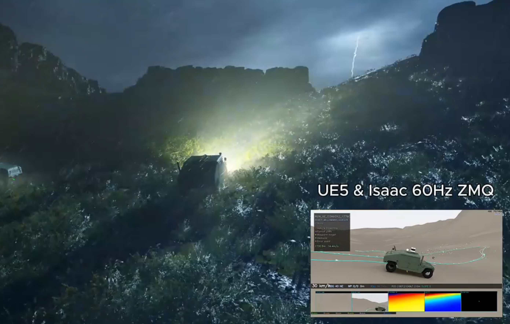
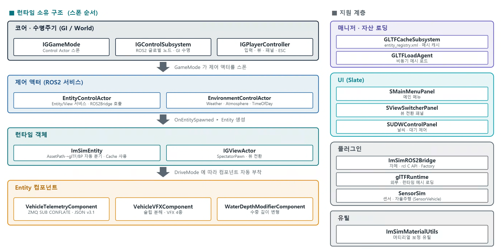
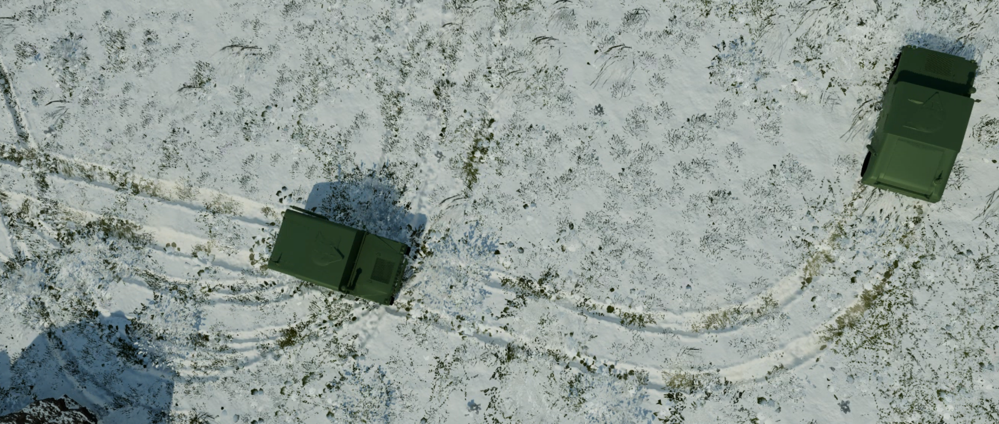
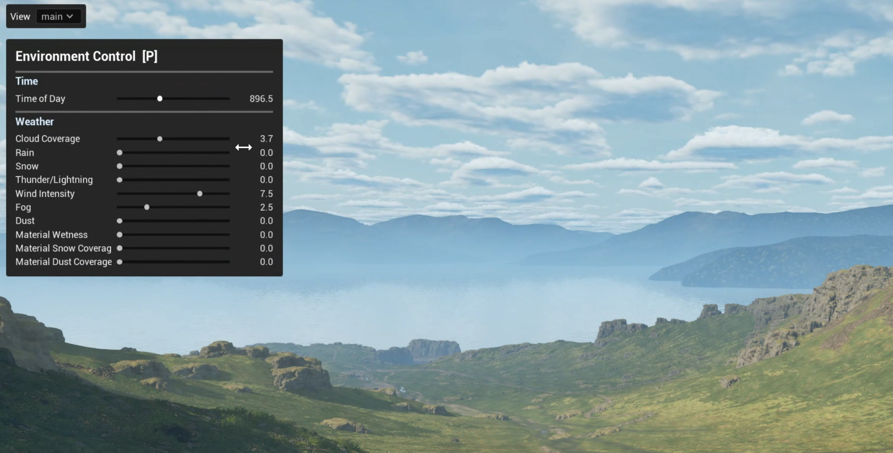
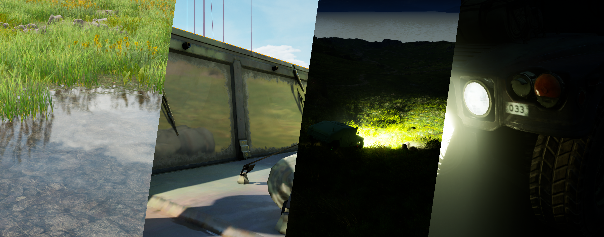
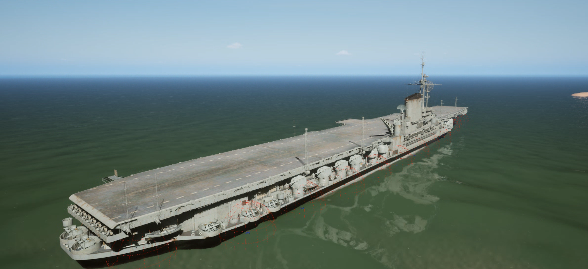
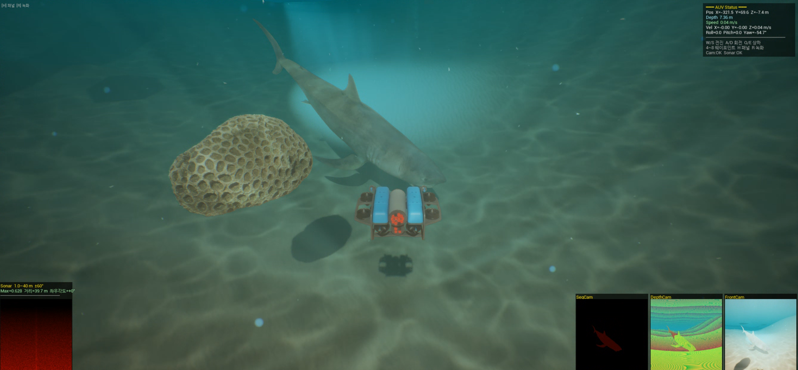
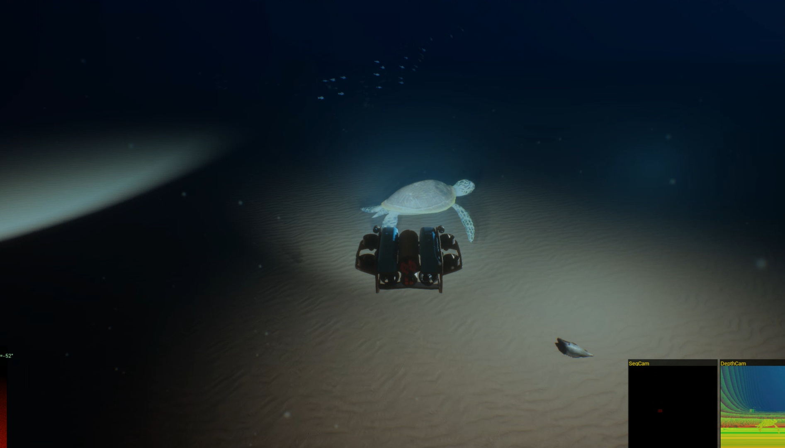

맵, Entity, View, 환경 구성을 설정 기반으로 교체하고, ROS2/ZMQ 입력과 매니저 클래스 처리 흐름을 통해 Unreal 월드에 반영
2026.01 - 2026.05 / Unreal Visualization Platform
ImSimViewer
Manipulate AI 검증·학습을 위한 가상 환경 구성과 군사 전장 시뮬레이션 기반 기능 준비를 목표로 진행한 Unreal Viewer 프로젝트.
외부 시뮬레이터 데이터를 Unreal 월드에 반영하고, 맵, Entity, View, 환경 구성을 설정 기반으로 교체할 수 있는 시각화 플랫폼 구현
역할 단독 개발
엔진 Unreal C++
연동 ROS2 Humble · ZMQ · glTF · XML

설정 기반 구성
맵, Entity, glTF, View 정보를 XML 설정으로 분리해 패키지 이후 확장 가능하도록 구성
통신 / 제어 구조
ROS2Bridge와 ZMQ 입력을 지원하고, 월드·Entity/View·환경 제어 요청을 매니저 클래스에서 처리
시각화 품질 확보
렌더링 옵션 조절과 플러그인 활용으로 차량 효과, 라이팅, 기상, 해상/수중 환경 품질을 확보
작업 방향
01
XML 설정 / 런타임 스폰
맵, View, Entity, glTF 경로를 XML로 정의해 패키지 후에도 설정 변경만으로 맵/View/Entity 구성을 교체할 수 있도록 구성
02
ROS2Bridge 포팅
rclUE를 Windows용 Unreal 프로젝트에 맞게 호환 작업하고, 해당 플러그인을 기반으로 ROS2 통신 기능 적용
03
제어 매니저 / 서비스
월드 로딩, 시뮬레이션 상태, Entity 스폰, 환경/날씨 제어 요청을 처리하는 매니저 구성
04
차량 텔레메트리 처리
ZMQ 차량 텔레메트리 포맷을 기준으로 위치, 자세, 속도, 주행 상태를 차량 이동과 VFX에 연결
05
환경 / 효과 시각화
렌더링 품질 옵션, 날씨/시간, 차량 주행 효과, 해상/수중 표현을 Unreal 월드에 적용
06
로컬 기능 검증
실시간 연동 전 단계에서 로컬 UI로 날씨/환경 제어를 확인하고, 차량 이동 기록 데이터 재생으로 차량 이동과 효과 흐름 검증
담당 상세
구현 상세
ROS2Bridge / 제어 서비스
ROS2Bridge 플러그인을 기반으로 맵 제어, Entity/View 제어, 환경 제어 요청을 매니저 클래스에서 처리하는 구조로 구현

ROS2Bridge
Windows용 Unreal 프로젝트에서 rclcpp 연동 시 빌드/링크 호환 문제가 발생해 rcl C API를 대신 사용하여 rclUE 플러그인을 Windows용으로 호환 작업. C API 기반 함수 호출과 사용법이 복잡해 반복되는 코드 블록을 매크로로 묶어 사용
Node 구조
액터에 부착하는 컴포넌트 단위 노드와 게임 인스턴스 단위 글로벌 노드를 제공. rclUE에 없던 글로벌 ROS Node 기능을 보완
메시지 호환
표준 ROS2 메시지와 커스텀 메시지 패키지(simul_msgs)를 사용할 수 있도록 구성하고, 메시지 정의와 노드 사용 절차를 매뉴얼로 정리
제어 서비스
월드/시뮬레이션 제어, Entity 제어, 날씨/환경 컨트롤 서비스를 구성하고 각 메시지를 매니저 클래스에서 처리
설정 로드
ig config.xml, entity registry.xml로 맵, View, Entity, glTF 정보와 기타 옵션을 정의해 패키지 이후에도 시각화 구성을 교체할 수 있도록 구성
런타임 스폰
glTFRuntime 기반으로 Entity 모델을 로드하고, Entity/ViewActor 클래스를 통해 월드에 배치. glTF 모델 제작 가이드 문서 제공
ZMQ / 차량 효과


ZMQ Telemetry
차량 텔레메트리 포맷을 기준으로 차량 이동 기록 데이터를 파일 재생 방식으로 재현하고, 차량 이동 처리 경로를 검증
Vehicle VFX
주행, 슬립, 드리프트 활성 여부와 강도/방향을 판단해 Tire Trail, 지형/눈/비 조건별 차량 효과를 적용
환경 제어 / 렌더링



환경 제어
로컬 UI로 시간, 기상, 풍속, 안개, 재질 젖음/적설/먼지 상태를 조정하고 월드 환경에 반영
렌더링 옵션
Lumen, Nanite, VSM과 PostProcessVolume 설정을 기준으로 간접광, 리플렉션, 그림자, AO, 안티앨리어싱 품질과 최적화를 고려해 렌더링 옵션을 조절
해상 / 수중 환경 구현
Unreal Viewer에서 수면, 수중 카메라, 깊이별 분위기, 잠수정 조작, 대형 선박 부력 기능을 우선 구현하고 표현 수준을 점검



수면과 수중 표현 구성
수면, 수중 카메라, 기상/안개 기반 표현을 구성. Caustics와 God Ray는 플러그인 효과를 활용하고, 화면 일렁임은 별도 Post Process 로직으로 추가
깊이별 수중 분위기
카메라의 수면 대비 깊이를 기준으로 색 채널별 감쇠율 차등 원리를 적용해 깊이별 수중 분위기를 조정
잠수정과 부력 검증
잠수정 조종과 센서 연동을 테스트하고, 부력 컴포넌트와 질량, 선/각속도 damping 값을 조절해 대형 선박 부력 테스트 진행
남은 보정 과제
UE Water Plugin 사용 시 underwater Post Process가 반투명 표현과 light scattering을 가리는 문제가 있어, 추가 보정 필요 항목으로 분리
참고
AI Agent 활용
- 범위
- 구조 설계, 구현 순서 정리, 코드 검토, 테스트/버그 수정 보조
- 목적
- 개발 속도와 검토 밀도 보완
샘플 지형 / Glass·폴리지 최적화
- 샘플 지형
- 외부 샘플 에셋 활용
- Glass/폴리지
- 눈에 띄지 않는 선에서 수량 조정, 컨택트 섀도만 활성화, 컬링 거리 조절